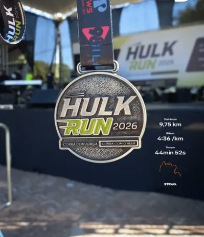
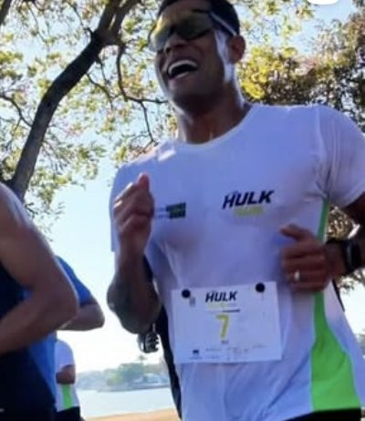

Belo Horizonte · Minas Gerais
Corridas de rua e eventos esportivos em Minas.
Organizamos a prova inteira: licenças, percurso, arena, kit, cronometragem e premiação. Se o seu conselho, empresa ou órgão público quer fazer uma corrida, a gente resolve.

Calendário
Estamos fechando as próximas datas. Acompanhe no @tardimproducoes.
Provas que já realizamos
Algumas das corridas produzidas e promovidas pela Tardim.



O que a Tardim faz
Produção e promoção de eventos esportivos e culturais, com a parte legal resolvida antes do primeiro corredor chegar.
-
Produção da prova
Percurso, arena, largada e chegada, staff, hidratação, kits, medalhas, premiação e programação do dia.
-
Regularização e licenciamento
Alvarás, autorizações de trânsito e de órgãos públicos, e o que mais a prova precisar para sair do papel.
-
Divulgação
Artes da prova, campanha nas redes, comunicação com os inscritos e retirada de kit.
-
Shows e ações
Palco, atrações e ações beneficentes junto da corrida, como na Hulk Run.
Fale com a gente
Quer organizar uma corrida ou tirar dúvida sobre inscrição? Mande um e-mail ou chame no Instagram.
- E-mail tardimproducoes.corridas@gmail.com
- Instagram @tardimproducoes
- Inscrições linktr.ee/Tardim